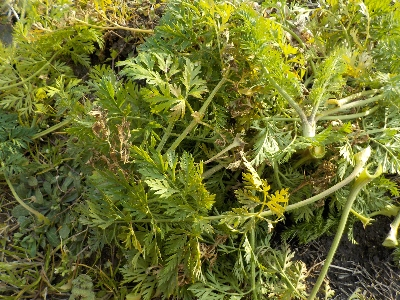
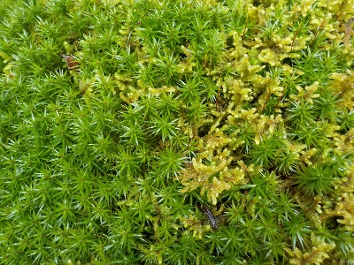
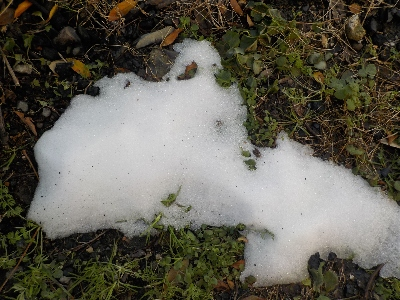

遊びで植物を育てよう
2025/01/19
ニンジンの葉は食べた方がいいのかな？。

再生野菜とかリボベジの情報を見ているとニンジンの葉っぱを食べるってあったんですけど、この葉っぱも食べたほうがいいのかな？
屋内の水耕栽培で育てた柔らかい葉ならいいかもしれないけど、これは固くて苦いですよね。
ニンジンの間引きした小さい葉っぱなら食べるんだけどな。
【1月TOP】
【日記TOP】
【園芸TOP】
2025/01/13
湿気が多いのかコケが茂っています。

寒くてもコケって育つんですね。
生い茂っています。
【1月TOP】
【日記TOP】
【園芸TOP】
2025/01/11
寒波が緩んだので外で動いてました。

日中の気温が少し上がって風もなかったので動きやすかったです。
雪は日陰にちょっと残ってるくらいでした。
【1月TOP】
【日記TOP】
【園芸TOP】
過去の日記
【2024年1月の日記】
【2023年1月の日記】
【2022年1月の日記】
【2021年1月の日記】
【2020年1月の日記】
【2019年1月の日記】
【2018年1月の日記】
【2017年１月の日記】
【2016年1月の日記】
【2015年1月の日記】
【2014年1月の日記】
【2013年1月の日記】
【1月TOP】
【日記TOP】
【園芸TOP】
畑仕事じゃないよ。
【おいしいものを食べよう。】【たくさん寝よう。】
【ソロ活をしよう!】【季節感のあることをしよう。】【動画視聴はほどほどに。】【当サイトの全てのコンテンツは無断転載禁止です。】